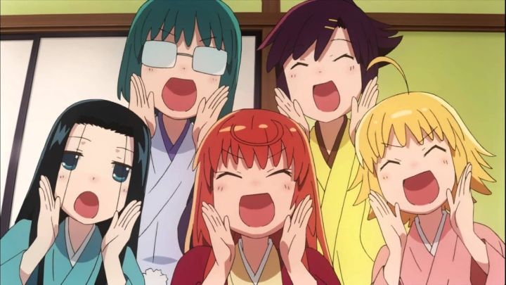

"Joshiraku" is a bit of a sleeper anime that I hadn't really heard of when it first aired. I first came across it around 2021, when a few certain snipets (either songs, or scenes) were trending online as user memes. It just happened that Sentai FIlmworks (through their Maiden Japan label) had licensed it for North America around that same time too. Indeed, it seemed to be a timely comedy, about young women spending most of their time in a small room with nonsensical discussions, only rarely going outside to a rarely empty Tokyo. Episode 2 even discusses a new strain of flu and how everyone was wearing masks to protect themselves, a subtle reference to the pandemic of 2020 and 2021.... wait, this aired in 2013? Seriously?!Yes, I was late to the party, and so was everyone else, apparently. Even so, I'm pleased to have seen it now. "Joshiraku" is another "cute-girls-doing-cute-things" anime, that bare-bones genre that was especially popular in the 2000's and 2010's. Rather than romance or fanservice, or purely cuteness, the more traditional genre here is slapstick comedy. The hook is that the five lead girls are raukgo performers in an old local theater, a type of live-performance storytelling. Rakugo also happened to be a popular anime subject years later, leading me to further think that "Joshiraku" was a cheap imitator cashing in on the matter years after its actual broadcast. If you are actually interested in the art of rakugo, you might be disappointed here. We only get one or two scenes of them performing in each episode, usually telling 10-second story with a punchline before bowing in thanks for the audience's attention. Most of the series really is of the girls, each a basic archtype (the brash one, the gloomy one, the one with glasses, etc.), just hanging out on the floor above in their traditional clothes, discussing random trivial ideas (and never their work or the craft of it), presumably while waiting to perform again or to rest after a day's work. Normally, I'm not excited about these shows due to their lack of substance. But I admit the first episode had me floored. Immediately, it starts with a self-aware discussion asking why the manga, about stationary girls having long discussions, would need to be animated in the first place. It breaks the fourth wall multiple times thereon, including a very clever way to introduce the names of the girls (ending with them looking at the viewer upon realization that they had just done so). To be clear, this meta-humor isn't exactly unique, as other similar shows before and since have employed the technique for pressure of needing to stand out. But by gosh, it's done SO WELL in that opening episode!Of course, the rest of the series never quite hits that level again, but it was consistently decent. The conversations cover things like what clothing styles are considered "casual" while still acceptable, what they might do if they won the lottery, or seeing shapes in the shadows of the moon that look like animals. Self-knowingly, one recurring joke is how one girl demands "don't ask dull questons!", prompting the others to ignore her and continue anyway. Another joke is the recurring text explaining "the conversations in this anime are as inoffensive as possible, so as not to interfere with your enjoyment of watching cute girls." Which is not to say the jokes are entirely safe: there isn't really any sexual fanservice here, but still some mildly crude humor you might expect older teenage girls (the girls aren't children, but are working adults instead) to naturally talk about. There are sometimes hints of darker personalities and more detailed backstories for all of the characters, but usually only on the surface, played as a joke, before returning to the status quo.  Many of the jokes also rely on knowledge of the Japanese language, and specifically on Japanese culture, particularly in modern Tokyo. The subtitles are fine enough to get the jist of each joke and the wordplay, but I sensed that there were subtle meanings that made them funnier than I would have otherwise known. More importantly, there are a ton of references to real-life companies, pop-culture characters and icons, including those in other anime: the show's solution is to show them on screen, but heavily blurred out and pixelated to avoid copyright issues, or to bleep out their names. Blurred images occur more frequently here than in porn, which is kind of funny, but not intentionally so. Generally, I found "Joshiraku" to be a riot, and I'm rarely impressed by comedy anime. There are only two major issues I had. One, which is common in this genre, is that the show is at its best in the first episode, and doesn't really require a full 13-episode series (you can see one episode and skip the rest if you had something more important to do). Continued viewing requires either a storyline, or particularly compelling characters; there isn't a story here, and the characters aren't particularly memorable. The second issue is the subtle nature of the jokes, relying on wordplay in the Japanese language and knowledge of Japanese culture, all presented here with subtitles (no English dub). That's perfectly fine, but the jokes tend to fly at a blistering pace (the manga author also wrote "Sayonara, Zetsubou-Sensei," another cult classic that licensors avoided for the sheer amount of text involved), and it's easy to miss a bunch before you finish reading. Maiden Japan's Bluray discs have a weird issue where the subtitles trigger at intervals rather than when the next line is supposed to appear, so if you rewind 10 seconds to see the joke, you'll be annoyed to watch for a full minute or more without any subtitles at all! It's a rare case where burned-in subtitles into the video file would have been helpful. The production values for the show are kind of average too. The animation is actually decent (again, primarily in the first episode, when show details in the rakugo perofrmance and preparation, and during the wall-breaking conversation trying to justify why the source manga could be justified as an anime), but naturally there aren't many opportunities for it. The character designs are a bit bland, and the few scenes when the girls are outside their room are clearly traced from real images, without much attention to style. The music is fun though, with both a great opening and ending theme that I never wanted to skip. Those songs fit the tone perfectly: a show of a bunch of girls telling stories and jokes, and just having fun. "Slice-of-life" anime are rarely worth writing home about, but "Joshiraku" is a fun time that's easy to recommend, especially for group viewing, like an anime club. It lives and dies entirely by its absurd jokes, and the result is indeed quite funny.
- "Ani" More reviews can be found at : https://2danicritic.github.io/ Previous review: review_Joseph_-_King_of_Dreams Next review: review_Jujutsu_Kaisen_0